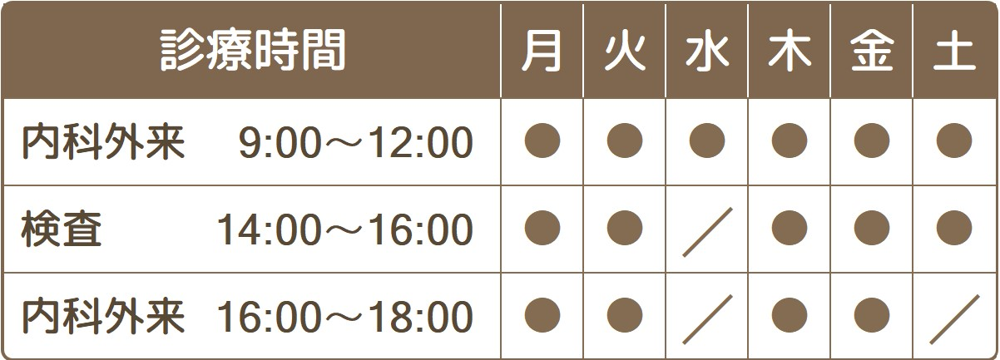

宝塚みずた内科・消化器クリニック
宝塚みずた内科・消化器クリニック



宝塚みずた内科・消化器クリニック
宝塚みずた内科・消化器クリニック
宝塚みずた内科・消化器クリニック
このようなお悩みはありませんか？
一般内科では、あなたの「かかりつけ医」として、体に関する様々なお困りごとのご相談や診療を行っています。
総合内科専門医・漢方家庭医として、あなたのお悩みの解決にむけたお手伝いをいたします。
まずはお気軽にご相談ください。
・高血圧
・糖尿病
・脂質異常症
・高尿酸血症
・痛風
・帯状疱疹
・上気道感染症（咽頭炎・副鼻腔炎）
・下気道感染症（気管支炎・肺炎）
・偏頭痛
・貧血
・アレルギー性鼻炎（花粉症）
・不眠症
・脱水症
・熱中症
・COPD・肺気腫
・前立腺肥大症
・過活動膀胱
このような症状にお悩みではありませんか？
消化器内科では、「おなかの専門医」として、おなかに関する様々なお困りごとのご相談や診療を行っています。
消化器病学会専門医・内視鏡専門医として、あなたのお悩みの解決に向けたお手伝いをいたします。
お腹の症状の原因として、胃がんや大腸がんなど大きな病気が隠れていることがあります。
ご希望を聞いたり、経過を見ながら適切なタイミングで検査を提案させていただきます。
食道の病気
・逆流性食道炎
・食道カンジダ症
・バレット食道
・食道静脈瘤
・食道裂孔ヘルニア
・食道がん
胃・十二指腸の病気
・胃がん・十二指腸がん
・胃ポリープ
・ヘリコバクターピロリ胃炎
・胃潰瘍・十二指腸潰瘍
・機能性ディスペプシア
・急性胃炎
・胃アニサキス症
大腸の病気
・過敏性腸症候群
・大腸ポリープ
・大腸がん
・大腸憩室炎
・虚血性大腸炎
・感染性大腸炎
・潰瘍性大腸炎
・クローン病
・腸閉塞
肝臓・胆嚢・膵臓の病気
・胆石
・胆嚢ポリープ
・胆嚢腺筋腫症
・NAFLD/NASH（脂肪肝）
・アルコール性肝障害
・肝・胆・膵がん
検査用パンツ、検査着を着用してベッドに寝ていただき、肛門から細いスコープを盲腸まで挿入して、すべての大腸を観察し異常がないかを調べる検査です。検査時間は、およそ15分～20分程度です。当院では、内視鏡専門医が検査を行います。ご希望の方には鎮静剤を使用し眠った状態で検査を行うことで検査による苦痛を和らげることが可能です。
また当院では、富士フイルム社製の最新の内視鏡システムを導入しており、これまでは見逃しがちな早期の小さな病変の発見も可能となっています。
胃内視鏡検査（胃カメラ）と同じ日に検査を行うことも可能です。
診断可能な疾患
大腸ポリープ、大腸がん、潰瘍性大腸炎、クローン病、大腸憩室症、虚血性腸炎、痔 など
検査中、ポリープがあった場合は、大きいものを除いてその場で切除することが可能です。検査中に画像を見ながら切除するかどうか相談することも可能です（鎮静剤を投与している方は、検査中の相談ができないため事前に同意をいただいた方のみ行います）。
ベッドに寝ていただき、鼻もしくは口から、細いスコープを挿入して、咽頭・食道・胃・十二指腸を観察し、異常がないかを調べる検査です。検査時間はおよそ5分～10分程度です。スコープの太さは、直径5.8mmと、「うどん」くらいの太さです。「えんぴつ」が大体7-8mmくらいの太さですので、それよりも細いです。
鼻の通り道が細い人は、この細いスコープを口から挿入することも可能です。
当院は、富士フイルム社製のEG-840Nという2022年11月に新発売された最新式の経鼻内視鏡を導入しており、小さくて見えにくい病変の発見も可能となっています。
診断可能な疾患
逆流性食道炎、食道がん、食道カンジダ、食道ポリープ、食道静脈瘤、
ヘリコバクターピロリ胃炎、胃がん、胃潰瘍、胃ポリープ、胃アニサキス
十二指腸炎、十二指腸ポリープ、十二指腸潰瘍、ピロリ菌感染症 など
心臓の大きさや形を見たり、肺に異常な影がないかなどを調べます。また、おなかのガスの状況などを検査します。
診断に有用な疾患
心拡大、心不全、肺がん、肺炎、肺結核、肺気腫、気胸、胸水、食道裂孔ヘルニア、腸閉塞など
当院の特徴
AI（人工知能）のソフトを導入しています
胸部レントゲン検査に富士フイルム社製のAIソフト（FUJIFILM CXR-AID)を導入し、肺がんの影や肺炎の影などについてAI（人工知能）診断と医師の読影とのダブルチェックを行なっています。
もちろん追加料金はかかりません。
また今後、胃カメラ検査や大腸カメラ検査においても、AIソフトを導入し、診療力の強化に努めていく予定です。
超音波で、おなかの臓器（肝臓、胆のう、膵臓、脾臓、腎臓）や血管の異常の有無を調べる検査です。X線がでないため放射線被爆の心配はなく安全性の高い検査です。
診断可能な疾患
肝臓がん、肝血管腫、肝硬変、肝嚢胞、脂肪肝、胆石、胆嚢ポリープ、胆嚢がん、すい臓がん、腎がん、腎結石、水腎症、腸閉塞、腹部大動脈瘤、腹水、前立腺肥大 など
心臓の電気的な活動を波形に現して記録する検査です。
診断可能な疾患
心筋梗塞、狭心症、不整脈、心肥大など
上記の検査などによって診断がつかない場合、検査の必要性が高いと判断される場合は、提携する医療機関でCTやMRIなどのより詳しい精密検査を手配することも可能です（検査結果は当院でご説明いたします）。
また必要な場合、適切なタイミングで、疾患に応じて信頼できる医療機関をご紹介いたします。
わからないことやご不安がありましたらご相談ください。
〒665-0822
宝塚市安倉中2丁目5番22号
（ヤマダデンキ宝塚店 向かい）
TEL 0797-26-8700
FAX 0797-26-8703